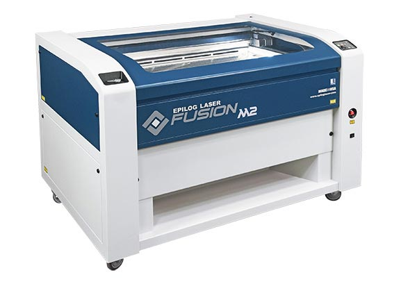

Tools
There are several tools that we use in the Fablab which include a 3D printer and a lasercutter
For the 3D printer, we are using the Ultimaker 2+ in the Fablab.
After we are done with our sketch in the Fusion 360, we can transfer the sketch to a slicer software called Cura. Next we import the STL file from the computer and scale the sketch such that it is the size that we want it to be. After that save the STl file into a seperate SD card and place the SD card into the 3Dprinter. The 3D printer will read the SD card and select the correct file, followed by clicking "print".
For the laser cutting we use the laser cutter fusion M2.
In order to operate the laser cutting machine, we have to make sure that the DXF file is loaded into the thumbdrive and ready to be imported into the system. ALign everything to the corner, with a margin of 1-2mm from the edge. Do remember to Zero and dry test. If you are using Plywood, a safe precaution would be to do a small testcut somewhere nearby to check for any impurities in the material. Once you get the beam strength and speed settings corrected close the hood and print. As for acryllic, acryllic does not really have any major concerns when it comes to impurities. Once it is done, wait for about 30 seconds for the fumes to vent out from the back. The fumes are not concentrated enough to be anywhere near harmful but it is still harmful when inhaled and therefore, the fumes need to be vented out. If you are engraving on wood, a good trick is to paste masking tape over the engraving area. This would prevent any burns or discolouration on the wood aroun the engraving.